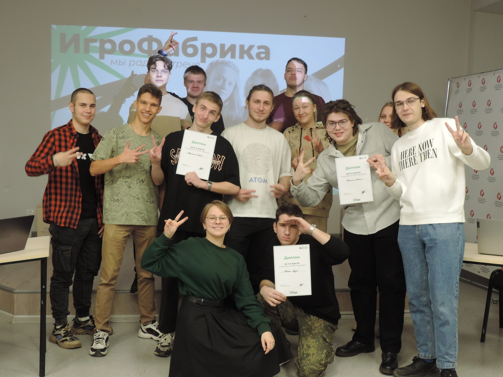

ИгроФабрике недавно исполнилось два года! Я считаю нужно поддержать развитие этого молодого клуба. Ведь именно тут студенты практикуются и прокачивают свои навыки в сфере разработки и не только. Участники ИгроФабрики - это довольно разносторонний народ. Тут можно встретить не только программистов, но и дизайнеров, музыкантов, креативных генераторов идей, пиарщиков, фотографов, ответственных организаторов различных мкроприятий и, конечно, любителей поиграть в видеогры в свободное время. Все эти студенты хотят всё больше и больше увеличивать свои познания в сфере IT, поэтому сейчас мы ищем возможность проведения для ребят интересных и познавательных мастер-классов от специалистов из разных сфер ИТ. Такие встречи дают не токльо новые знания, но и мотивацию работать над собой, чтобы добиться таких же успехов или стать даже лучше! Я считаю важно поддерживать огонь в глазах и сердцах студентов, благодаря чему они будут учиться не просто ради того чтобы кое как закрыть сессию, а ради своего светлого будущего, ради совершенстовования своих навыков для достижения глобальных целей. Если правильно замотивировать студентов, то они будут искать возможность обучения не только на учёбе, но во вне учебное время. И для этого как раз таки существует ИгроФабрика, которая рада активным студентам. А чтобы студенты могли развеятся, отвлечься ненадолго от учёбы, чтобы не перегореть, мы проводим захватывающие турниры, а также просто устраиваем посиделки для большей коммуникации студентов.